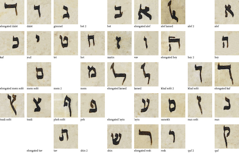
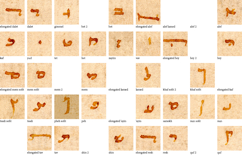
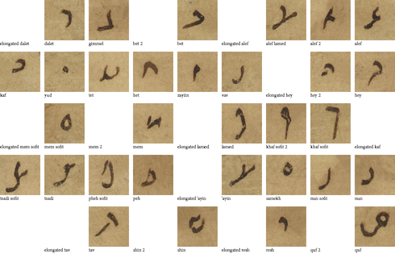

Introduction
Welcome! This website contains supplementary content for the Zooniverse article published on Startwords in 2021/2022. Contains HTML + JavaScript examples for the multi-language transcription keyboard built for the Scribes of the Cairo Geniza website.
The following sections describe how to build your own basic on-screen multi-language transcription keyboard from scratch, and is designed for researchers and programmers with some understanding of HTML and JavaScript.
If you're a more experienced web developer who's very familiar with React, you may want to jump straight into the Scribes of the Cairo Geniza repo, possibly starting with the AnnotationKeyboard component.
A HTML Form
01. The Basics: A Form With Some Text Input
Let's start by setting up a very basic web form. It has one text input field, one submit button, and one output panel.
(view source code)This example breaks down the idea of a "text transcription website" to its simplest form. The text input field is what the user types into, and the output panel is (let's pretend) the server they're submitting their transcriptions to.
Everything we build from this point onwards is meant to solve one very simple problem: how do we allow users to type, into that text input field, in a language that's not native to theirs? e.g. how do we help a user type in the text "ごはんを食べる" when they only have a US-International QWERTY keyboard, and we don't want to ask them to futz about in their computer settings to install a Japanese language pack?
02. A Simple On-screen Keyboard
A straightforward solution is to create an on-screen keyboard for the user. In this example, we create an a Japanese keyboard with 5 characters. Clicking on each button/"keyboard key" adds the corresponding character to the end of the text input field.
Note: we're using the Japanese hiragana characters あいうえお here because they map easily to the English characters AIUEO, and are written left-to-right. We'll build up to more complex alphabets, such as Hebrew and its right-to-left layout, in later sections.
(view source code)The code here is simple, but we already come across a problem: what if the user wants to add a Japanese character in the middle (instead of at the end) of the text box? This is, after all, a very basic function for a normal text box - you can place the text cursor/caret at any part of the existing text and then start typing.
03. Text Selection
This is actually a solved problem: we use the standard HTMLInputElement's
selectionStart, selectionEnd, and setSelectionRange
to interact with the "text cursor" on the text input field.
In the example above, we've done two things in the code: 1. we ensure the Japanese characters are inserted at the position of the text cursor/caret, and 2. we ensure the text input maintains focus after the insertion. These may seem like minor coding considerations, but they're important to ensure a consistent UX (User Experience), since users often have pre-set expectations on how UI (User Interface) elements should behave.
04. Physical Keyboard Key Capture
Alright, so we now have an on-screen keyboard. But what about the user's physical keyboard? A user might find it easier to use their physical keyboard to do text transcription, compared to clicking each on-screen keyboard button individually. With that in mind, let's try to translate those physical key presses into our custom character input.
In this example, when the user presses the 'A' key on their keyboard, the Japanese character あ is inserted into the text field instead. Same for the other characters: A -> あ , I -> い, U -> う, E -> え, O -> お
(view source code)If you have an on-screen keyboard AND you're capturing physical key input, it's a good idea to label those on-screen keyboard buttons with the corresponding physical keys.
One of the biggest considerations here is what kind of physical keyboard does your user have? In our examples, we're making a very hard assumption that all our users have US-International QWERTY keyboards, and we choose to map physical keyboard keys to their replacement characters.
Note: there are different ways to get what the user typed into a text
field. keyboardEvent.code corresponds to the PHYSICAL key on
the keyboard. keyboardEvent.key corresponds to the TEXT VALUE
of the key. If a user presses the 'A' key on a US-International QWERTY
keyboard, we get code='KeyA', and key='a' (if
shift/capslock is off) or key='A' (if shift/capslock is on).
WARNING: now that we know how to capture and replace keyboard input, we also need to learn when not to do so. Sometimes, when a user presses the 'A' key, they just want to type in the character 'A', not 'あ'! Always allow your users the option to disable your on-screen keyboard. The example above has no such option, but we'll explore how we can do this once we jump into the "multi-language" functionality of our onscreen keyboard.
Multi-Language Keyboards
05. Code Cleanup
Before we proceed with the advanced considerations of creating an on-screen keyboard with multiple languages, let's clean up our code.
In the example below, you won't see many changes in terms of UI functionality, but a lot of the source code was altered. Notably:
- The Japanese characters have now been compiled into a "Japanese keyboard" data object, setting the stage for dynamically-generated keyboards for different languages.
- Similarly, we now have "English keyboard" and "QWERTY layout" data objects that help ensure the visual layout of the on-screen keyboard matches the user's physical keyboard.
06. Language Selection
Now that we have cleaned up the code so that the English and Japanese keyboards are stored data objects, we see that it's very simple to add new languages/keyboards to the system, and to allow the user to switch between those languages/keyboards.
To illustrate this point, we've added a joke "Emoji keyboard" that maps QWERTY keys to arbitrary emoji characters. Typing in "Hello world" into input text field will result in the emoji "text" of "🐟🤣🦋🦋😍 😅😍🥰🦋🐒"
(view source code)Note: there is an option to select "(No keyboard)" here, which disables the on-screen keyboard as well as key capture. As mentioned earlier, always allow your users the option to disable your on-screen keyboard.
At this point, you might realise one limitation to our solution: our code simply re-maps the QWERTY keyboard, so we can only have one character for one key.
While we started our examples with a very simple 5-character Japanese keyboard, we unfortunately have to discard it since a proper, fully-functional Japanese keyboard is beyond the scope of this work. The Japanese hiragana writing system alone has 48 common base characters, which can be further modified with diacritics, character size, etc.
In the next section, we'll start adding a Hebrew keyboard. The Hebrew alphabet has 22 characters, which will map very easily to English/QWERTY's 26 characters. However, the Hebrew alphabet will introduce a new wrinkle: right-to-left text, which we'll need to solve.
07. Hebrew and RTL languages
With the given assumption that English is the "default" language of web code (yes, we know, that discussion is a can of worms), it's unsurprising that that layout of most web pages default to left-to-right, top-to-bottom.
As a result, we must be conscientious when we create on-screen keyboards for languages to read right-to-left, such as Hebrew and Arabic. In the example below, we've done two things:
- We've upgraded the keyboard data objects so each language, in addition to having characters, also has an explicit 'direction' value. (Either 'ltr' or 'rtl')
-
The text input field has an explicit CSS
directionvalue that changes depending on the active keyboard.
Since we're only interested in creating a functional on-screen keyboard, we only modified the CSS direction of the text input field. On the other hand, if you're creating, e.g. a whole website that supports both LTR and RTL languages, then you need to be conscientous about the layout of your entire website, and whether that layout needs to be flipped along the horizontal axis to make sense to RTL readers.
Fun(?) Note: mixing LTR text with RTL text can lead to extremely confusing
UI interactions. For example, in the text input field below, using your
mouse, try to highlight the word APPLE plus one character before it and
one character after it, i.e. "הAPPLEן". Good luck!
Visual Script References
08. Keys with Visual Script References
Now that we've proven that it's possible to map different key input to characters from different languages, we need to solve another problem. Our users will be looking at handwritten manuscipts from different regions and different eras, so it'll be very useful if they can have a visual reference for the different kind of scripts (handwritten text) available.
Fortunately, this is a fairly straightforward matter of adding images - for each character, from various scripts - to our visual keyboard.
In our example below, we've added the "Yemenite Square" visual script reference for the Hebrew keyboard.
(view source code)The actual hard work comes in two parts. First, it requires a human hand to create the reference image JPEG for each style of script, and to ensure it has a consistent layout. Second, there's a one-off upfront development cost to map the visuals to the data. We found that this early investment is well worth it when we get into the next section.
For our project, we decided to put every character of the "Yemenite Square" Hebrew script into a single image file (i.e. as opposed to having dozens of image files, one for each character) and used a CSS technique called "image sprites" to separate each character when needed. For example, when we want to show the 'Alef' א character (top row, right-most column) we tell the code to "crop" the image at x=440px y=0px width=50px height=50px.
Visual Hebrew script reference for Yemenite Square
09. Multiple Visual Script References
There are several advantages to organising our "Yemenite Square" Hebrew script into a single image file. Smaller downloads for our users is one, but more importantly, its consistent visual layout allows us to use it as a template to quickly deploy multiple visual scripts.
In the example below, you'll see that we've added six new Hebrew scripts, and if you check the code, it only required six additional lines of code.
(view source code)While it's now trivial to add new scripts from a code perspective, please remember that it still takes a considerable amount of effort to create each individual script's JPEG. (So developers, please remember to thank the people who've been scanning the manuscripts, manually identifying the handwritten characters, and putting them into a nice image file for us.)
Below, you can see three different Hebrew scripts that we used. You'll note that while we made an effort to keep the visual layout, character position, and character size consistent across every style of script, some scripts are missing certain characters. For example, both Maghrebi Cursive and Byzantine Miniscule don't have a visual reference for the 'elongated Kaf' ך character. In these cases, we simply didn't have a visual reference from the source.
Visual Hebrew script reference for Yemenite Square
Visual Hebrew script reference for Byzantine Minuscule
Visual Hebrew script reference for Maghrebi Cursive